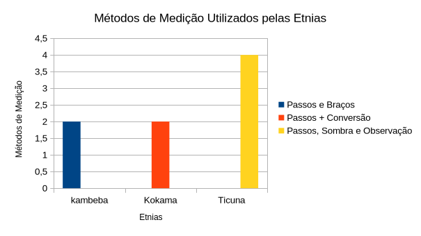
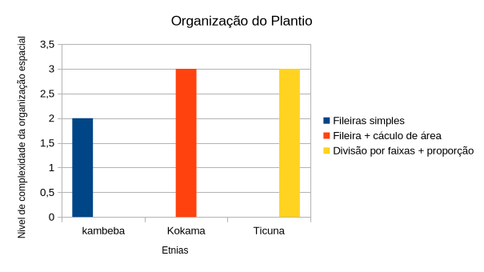

Curiosidades sobre as Etnias
Os povos indígenas Ticuna, Kokama e Kambeba, localizados em Tabatinga-AM, possuem uma rica diversidade de saberes e práticas tradicionais que fazem parte de seu modo de vida.
Nesta página, são apresentadas algumas curiosidades relacionadas ao cotidiano dessas etnias, incluindo aspectos como agricultura, caça, pesca e outras atividades fundamentais para sua subsistência e organização social. Cada uma dessas práticas revela conhecimentos próprios, construídos ao longo do tempo e transmitidos entre gerações.
Comparações e Representações Gráficas Sobre a Agricultura

Este gráfico apresenta uma comparação entre as etnias Kambeba, Kokama e Ticuna quanto ao uso de medidas não padronizadas na agricultura. Observa-se que todas utilizam o corpo como principal instrumento de medição, especialmente por meio de passos, demonstrando uma matemática prática baseada na experiência.
A etnia Kambeba utiliza principalmente passos e braços como referência para organizar o plantio. Já os Kokama, além do uso de passos, realizam a conversão dessas medidas para unidades formais, como o metro, estabelecendo uma relação entre saber tradicional e matemática convencional. Os Ticuna apresentam maior diversidade de métodos, incluindo passos, observação visual, sombra do corpo e elementos naturais como cipós.
O gráfico evidencia que, embora não utilizem instrumentos padronizados como réguas ou trenas, todas as etnias aplicam conceitos matemáticos como medidas de comprimento, estimativas e, em alguns casos, conversão de unidades. Esses conhecimentos são fundamentais para o planejamento agrícola e são transmitidos de geração em geração.
Organização do Plantio

Este gráfico representa a forma como as etnias organizam espacialmente suas plantações, evidenciando o uso de conceitos matemáticos no planejamento agrícola.
A etnia Kambeba organiza o plantio em fileiras, utilizando o espaçamento entre as plantas para garantir seu crescimento adequado. Esse método demonstra uma aplicação prática de divisão do espaço e distribuição linear.
Os Kokama, além de utilizarem fileiras, realizam cálculos mais estruturados, como a quantidade de plantas por fileira e a área total do terreno. Isso evidencia o uso de multiplicação, divisão e noções de área no planejamento da roça. Já os Ticuna organizam o terreno em faixas destinadas a diferentes culturas, como milho, mandioca e batata-doce. Essa divisão segue proporções específicas, demonstrando um uso mais complexo da geometria e da organização espacial.
De modo geral, o gráfico mostra que, mesmo sem o uso de fórmulas matemáticas formais, as três etnias aplicam conceitos como área, distribuição espacial e proporcionalidade, fundamentais para o uso eficiente do solo.